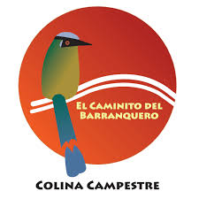

Caminito del Barranquero
📍 Popayán, Cauca
Sendero ecológico ubicado junto al río Molino y la quebrada Quitacalzón. Es un espacio destinado a la educación ambiental y la observación de aves.
🐦 Aves destacadas
- Barranquero
- Carpinteritos
- Aves de bosque urbano
📱 Escanea para llegar
Escanea este código con tu celular para abrir la ubicación.